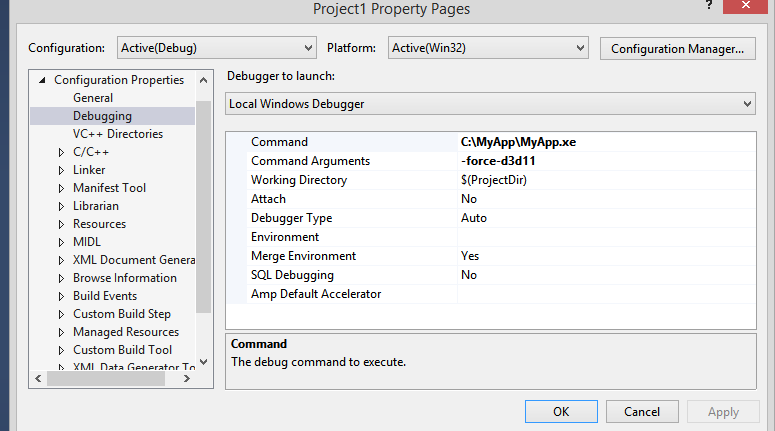

Debugging DirectX 11 shaders with Visual Studio
In Visual Studio 2012, Microsoft has indroduced Graphics Debugger, you can use it to capture a frame from platforms like Unity Editor, Windows Standalone or Windows Store Apps.
It’s recommended to use Visual Studio 2013, as it contains several fixes for Graphics Debugger.
Note: Unity Editor contains multiple child windows inside, this may cause Graphics Debugger to capture frame from incorrect window, to ensure that correct window will be captured, check ‘Maximize on Play’ tab, and hit Play button before capturing, but even then there’s no guarantee that the correct window will be captured, that’s why it’s not recommended to use Unity Editor for frame capturing.
Note: Frames can only be captured if Unity is running under DirectX 11, you can select DirectX 11 from Player Settings (PC, Mac & LinuxStandalone) -> Other Settings.
Steps to capture frame from Unity Editor or Windows Standalone:
Launch Visual Studio 2013
Go to File->New->Project->Visual C++->Empty Project
Go to Project->Properties->Configuration Properties->Debugging
In Command field, replace $(TargetPath) with path to Unity Editor or Windows Standalone, for ex., C:\MyApp\MyApp.exe
(Optional) In Command Arguments specify -force-d3d11, this will force Windows Standalone or Unity Editor to run under DirectX 11

Project Properties
You’re ready to run Graphics Debugger, go to Debug->Graphics->Start Diagnostics
If everything is configured correctly you should see “Use ‘Print Screen’ key to capture a frame” message in top left corner of the application. See screenshot below.

Screenshot from Windows Standalone application running with Graphics Debugger
Steps to debug DirectX 11 shader:
To debug a shader you have to compile with debug symbols, to do that, you have insert #pragma enable_d3d11_debug_symbols
Let’s try to create a basic example:
Create a new Unity project
Create a new shader in Assets window
Insert #pragma enable_d3d11_debug_symbols
Create a new material and select your custom shader
Assign a material to some object, for ex., a cube
Build Windows Standalone application
Capture a frame with steps mentioned above
Your shader should look like this:
Shader "Custom/NewShader" {
Properties {
_MainTex ("Base (RGB)", 2D) = "white" {}
}
SubShader {
Tags { "RenderType"="Opaque" }
LOD 200
CGPROGRAM
#pragma surface surf Lambert
#pragma enable_d3d11_debug_symbols
sampler2D _MainTex;
struct Input {
float2 uv_MainTex;
};
void surf (Input IN, inout SurfaceOutput o) {
half4 c = tex2D (_MainTex, IN.uv_MainTex);
o.Albedo = c.rgb;
o.Alpha = c.a;
}
ENDCG
}
FallBack "Diffuse"
}
If everything done correctly, you should see the following captured frame, right click and select Pixel History and select the pixel of an object which has your custom shader assigned.

Captured frame
Click the play button next to the Vertex Shader (circled in red in screenshot above), you should be able to debug vertex shader.

Debugging vertex shader
Windows Store Apps
For Windows Store Apps, it’s a bit easier, because you don’t need to create a dummy Visual Studio project, the project is already created by Unity.
Steps for capturing the frame and shader debugging are the same like for Unity Editor or Windows Standalone.
Alternative shader debugging techniques
In the Unity Editor, you can also use RenderDoc to debug shaders, by capturing the scene from within the editor and debugging in the standalone tool.